変形
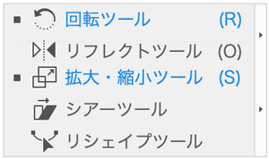
リフレクトツール
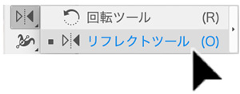
- 「線対称」の複製を作るときに使用するツールです。
ドキュメントを開く
（1）[ファイル]→[開く]
（2）「henkei」フォルダ→「飛行機.ai」を開く
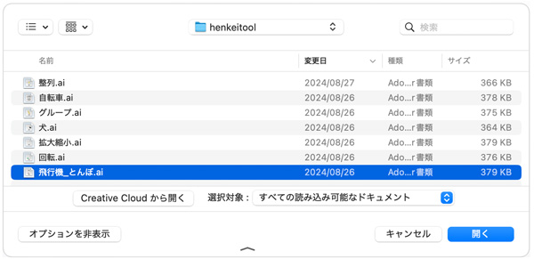
飛行機を作る
（1）リフレクトツールを選択する
（2）画面上の飛行機を選択する
※リフレクトツールを選択したまま、[Ctrl]キーを押すと一時的に選択ツールに変更できます。
（3）[Ctrl]キーを押しながらドラッグして選択します
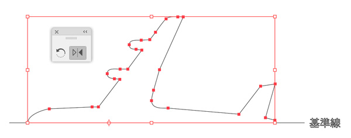
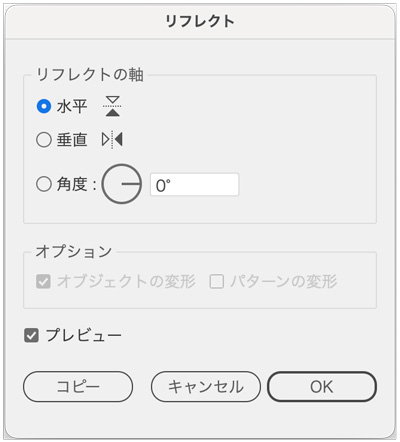
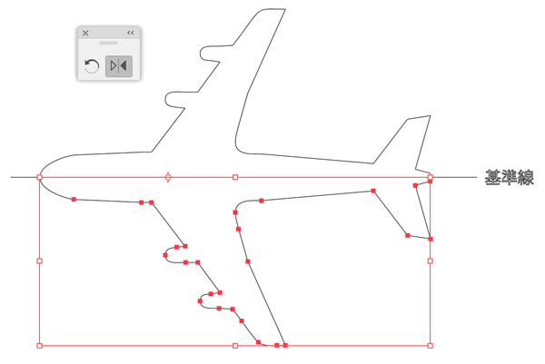
（6）「プレビュー」にして確認する
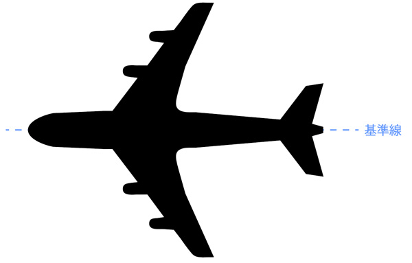
トンボを作る
（1）トンボを選択する
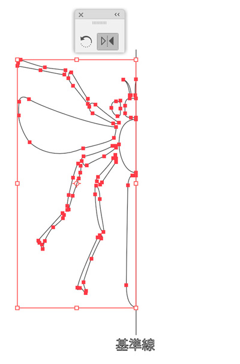
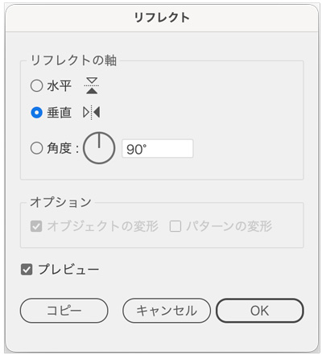
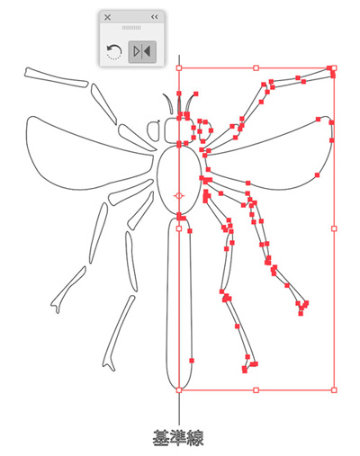
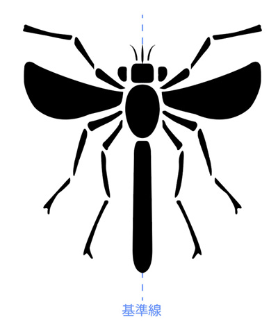